Welcome back to the Wizard Fella newsletter!!! This is already issue number 4 which is kinda crazy to think about.
Check out some of the things I've worked on this month!
As usual I will start with Big Dreams. Unlike last month, there's actually been some really good progress on it. Part 2 is at the stage where the layout has been made and I've been getting some people to playtest it to make it better.
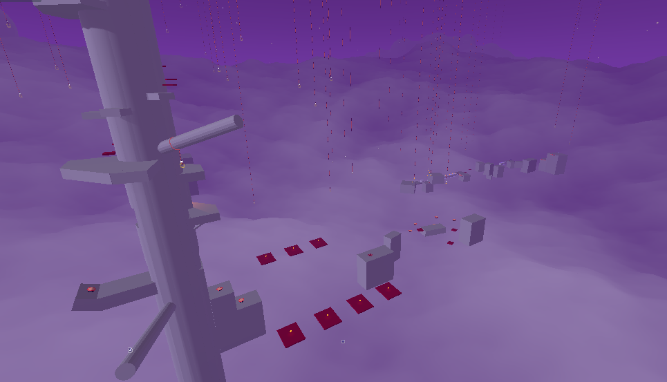
Screenshot 1 of Big Dreams Part 2
Hopefully by next month I can replace the gray boxes with real assets and maybe I can also even get to working on Part 3.
But until then, here's a few more images of this part currently
it'll be cool to look at these again once I put the assets in
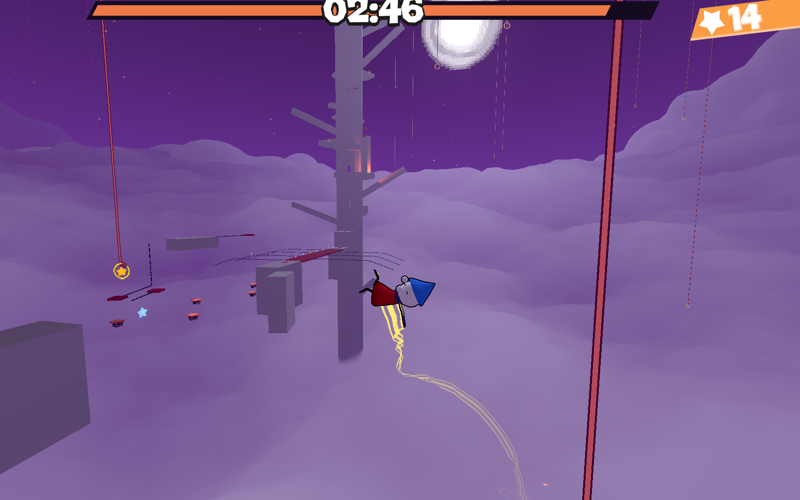
Screenshot 2 of Big Dreams Part 2
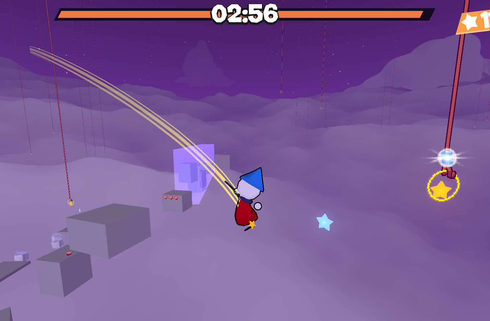
Screenshot 3 of Big Dreams Part 2
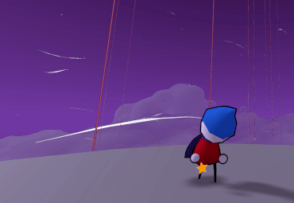
Flute getting blown away
Speed Pads are a new platforming prop that give you a temporary speed boost.
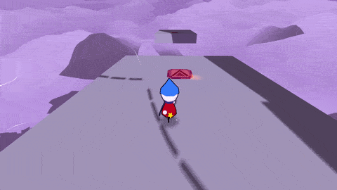
Speed Pad in action
I'm pretty happy with how they turned out both gameplay and visuals wise and I'm already using them in Part 2 of Big Dreams
They can also be set to have an opposite effect where they slow you down instead
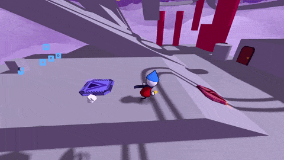
Inverse Speed Pad in action
Doors are simple interactibles that will be useful once I get to working on the real Islands, where they could be used to enter houses and stuff like that.
Doors have 3 modes: Simple, Teleport and Scene Change
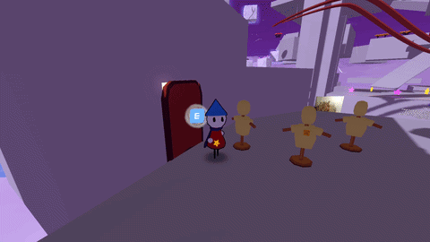
Simple doors
In simple mode, interacting with doors just lets you open it and walk through it.
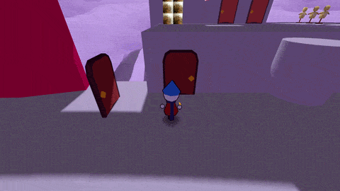
Teleport doors
In teleport mode, two doors can be linked together where going into one will teleport you to the other.
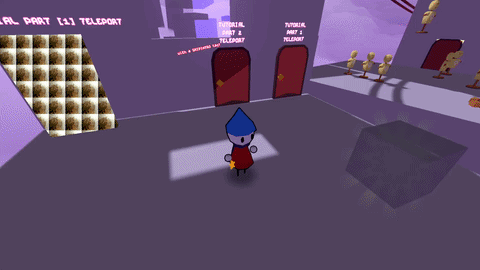
Scene changing doors
A scene change door lets you go to an entirely different scene (level)
Time Orbs add more time to the active timer once you touch them
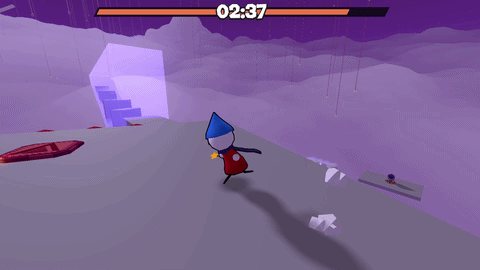
Collecting a time orb in Big Dreams
I've placed a few of these around Part 2 of Big Dreams so that you can gain more time if you go a bit outside of the intended path.
The Diary
The Diary now changes based on which levels you've visited!
Every new Island you visit adds 2 new pages to the Diary and then it changes as you complete more parts of it.
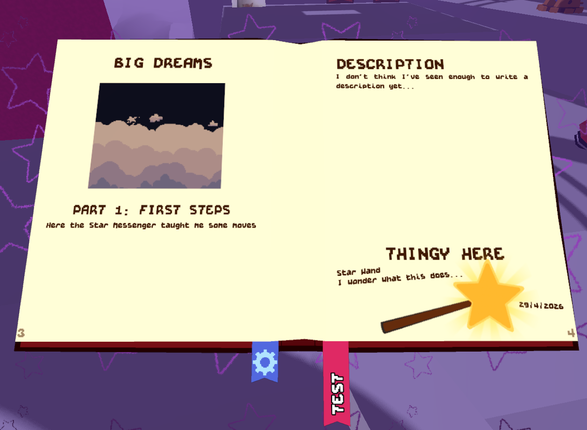
Diary after you complete part 1 of Big Dreams
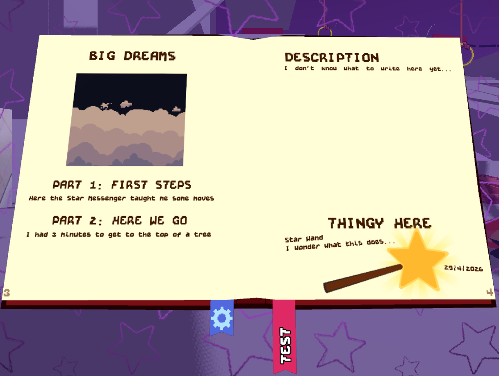
Diary after you complete part 2 of Big Dreams
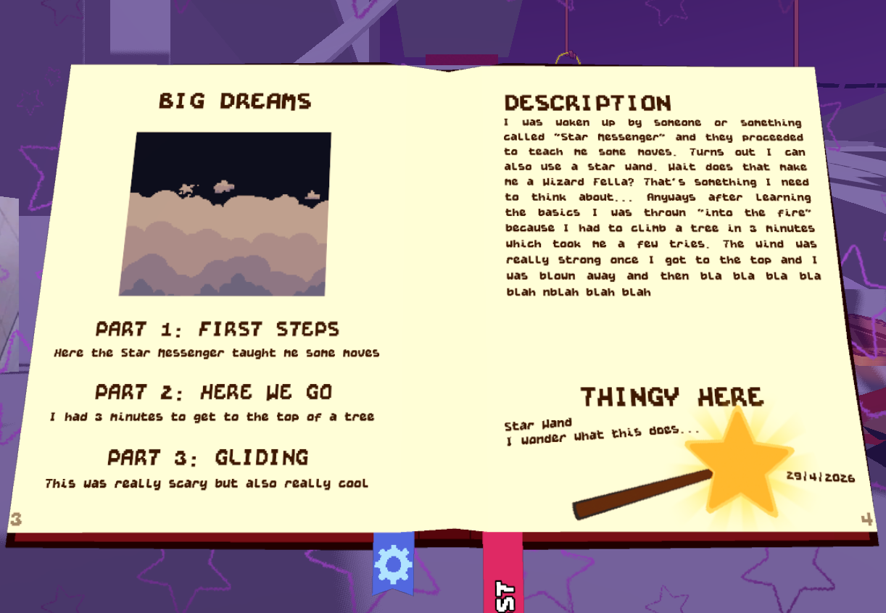
Diary after you complete part 3 of Big Dreams
The Evil Darkness
It slowly consumes you.
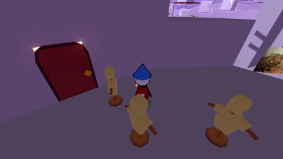
The evil darkness
Thank you once again for reading! Recently I've been busy with studying but once all my exams are done I will have a lot more time to work on the game. Thats why I think I can manage to release a little public demo in summer (but no promises for now)
Anyways I'll see you again next month and if you're also doing any exams then good luck to you!!!
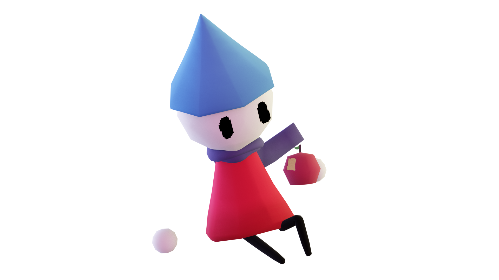
Flute enjoying an apple (this is very important for the lore)